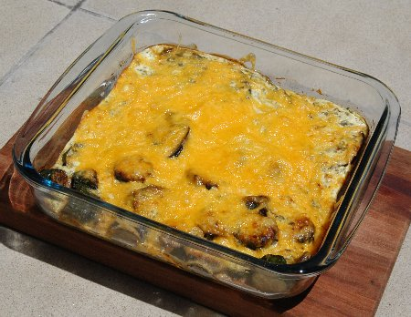

| Zutaten für 2 Personen: | |
| Zucchetti | |
| Butter | |
| Salz | |
| Dill | |
| 1 | Ei |
| 250g | Magerquark |
| 4 El | Petersilie |
| 4 El | Schnittlauch |
| 100 g | Reibkäse |
Auflaufform fetten.
Ofen auf 180°C vorheizen
Zucchetti in dicke Scheiben schneiden.
Schnittlauch fein hacken und in einen Rührbecher geben.
Petersilie ebenfalls hacken und dazu geben
Ei, Quark zugeben und gut verrühren.
Zucchetti in wenig Butter in der Bratpfanne dämpfen. 1 EL Wasser zugeben und mit Salz und Dill würzen.
Anschliessend kommt das Gemüse in die Auflaufform und wird mit dem Guss übergossen.
Zuletzt Reibkäse darüber verteilen und im heissen Ofen etwa 10 Minuten backen.
Herbert Eigenmann, Code: ZCA
Hat am 12.12.2006 in Kapstadt hervorragend geschmeckt. Den Quark kauft man hier als "Smooth Low Fat Cream Cheese" was bestimmt nicht das gleiche ist aber nahe kommt. Als Reibkäse gibt es hier bloss geriebenen Cheddar. In der Schweiz kann man das bestimmt geschmacklich besser differenzieren. Da ich nicht so scharf auf Zucchetti bin und es bloss mini-Zuchettis zu kaufen gab haben wir diese mit Aubergine kombiniert. RE
Sandra hat mir das im März 2013 zubereitet und es war ganz fein! RE
@LINKBACK_TAG@ @WAKELOCK@